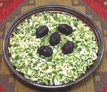

|
Cabbage Cilantro SaladChile - Ensalada de Repollo con Merquén | ||||
| Makes: Effort: Sched: DoAhead: |
4 cups ** 25 min Yes |
A simple, elegant and refreshing salad. It stands up well on the buffet table. The one "difficult" ingredient is easy to get around. I hand chop as food processors tend to chop too fine. | |||
|
1 2/3 ----- 3 2 1/2 1/2 ----- |
# c --- T T t t --- |
Cabbage Cilantro -- Dressing Lemon Juice Olive Oil ExtV Merkén (1) Salt -- Garnish Kalamata Olives |
Make - (25 min (hand chopped))
|